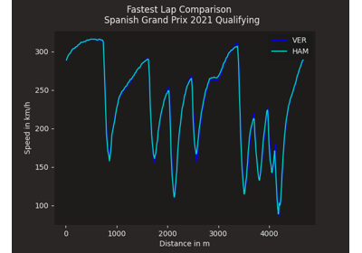
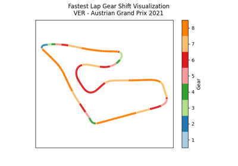
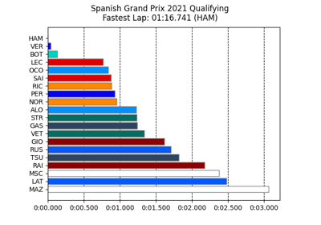
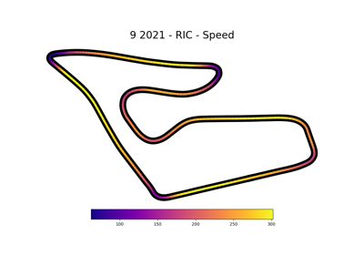

Examples Gallery#

Position changes during a race
Position changes during a race

Overlaying speed traces of two laps
Overlaying speed traces of two laps
Driver Laptimes Scatterplot

Gear shifts on track
Team Pace Comparison
Tyre strategies during a race
Plot speed traces with corner annotations
Plot speed traces with corner annotations

Qualifying results overview



Speed visualization on track map
Speed visualization on track map
Draw a track map with numbered corners
Draw a track map with numbered corners
Plot driver standings in a heatmap
Plot driver standings in a heatmap